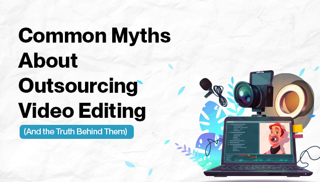

© Copyright 2022 © All Right Reserved.

Video editing outsourcing has grown in popularity among production companies, marketing teams and content creators. But despite its increasing popularity, there are still several misconceptions about outsourced video editing that prevent experts from taking advantage of all that it has to offer. Editing was born in the world when the need for soundtracks in silent films gave rise to video editing as compared to the scope of video editing which is much more expansive today.
In order to help you scale your content production without sacrificing quality, we'll dispel the most widespread misconceptions regarding outsourced video editing in this blog post.
Let’s read it out..!
The Myth: A common misconception among creators is that outsourced video editing won't be able to comprehend or mimic their distinct tone, brand voice or editing style.
The Reality: Expert outsourced video editors frequently focus on adhering to your brand's standards. Actually, to grasp your tone and vision, the majority of freelancers and outsourcing companies begin projects with a style guide and sample review phase by ensuring that the finished product feels like an extension of your brand rather than an outside interpretation which is made easier with clear communication.
The Myth: YouTubers, solopreneurs and small businesses believe that outsourcing is only advantageous or affordable for big brands.
| Company Type | Benefit of Outsourcing Video Editing Services |
|---|---|
| YouTubers | Focus on content creation and audience growth. |
| Small agencies | Deliver faster with lean resources. |
| Startups | Access high-quality videos without in-house hires. |
The Reality: Small creators can save time and money by outsourcing. Rather than spending money on pricey software and salaries, you can hire independent editors on a project-by-project basis.
The Myth: According to some, collaborating with an outsourced video editing team results in communication lags and delays.
The Reality: When compared to doing everything in-house, the right outsourced video editor will expedite delivery even though poor communication can cause delays in projects.
| Editing Approach | Average Turnaround Time |
|---|---|
| In-house | 3–7 days (depending on workload) |
| Outsourced (agency) | 1–3 days (based on complexity) |
| Freelance editor | 2–5 days |
Timelines generally compare as follows:
The Myth: Many artists are concerned that delegating editing responsibilities equates to delegating creative control.
The Truth: When done correctly, outsourced video editing services enhance rather than diminish your ability to be creative.
Just make sure following things:
You simply assign the manual labor to a qualified technician; you remain the director. In fact, because of their extensive experience, many creators discover that outsourced editors provide fresh, imaginative ideas.
The Myth: People think that videos that are created by an outsourced video editor will appear less polished or "cookie-cutter."
The Truth: It relies on the person you choose to outsource. Expert editors frequently possess:
The editor is committed to that particular skill, outsourced videos frequently appear more polished than in-house edits.
The Myth: Due to worries about data security, some clients are hesitant to send their raw footage to editors abroad.
The truth is that legitimate agencies and editors take data security very seriously. Many make use of:
For added protection:
Put a watermark on your content.
For previews, send low-resolution files.
Make use of platforms that enable controlled sharing such as Frame.io.
The Myth: Customers fear that with outsourced video editing, they will have to repeat all of the explanations for each video.
The Truth: The Majority of outsourcing partners create brand profiles, presets and editing templates for loyal customers. That means less explanation each time and a quicker turnaround.
Request that your editor to:
The Myth: Clients fear that language or cultural barriers will lead to misunderstandings when outsourcing abroad.
The Reality: Although this is possible, elite editors have international clientele and are adept at communicating across cultural boundaries. Professionalism and fluency in English are expected in the freelance video editing industry.
Additionally, tools such as:
2007: No Country for Old Men was the first Oscar-winning film edited using Final Cut Pro. (Roderick Jaynes was also nominated for an Oscar for Best Editing.)
| Criteria | What to Look For! |
|---|---|
| Portfolio | Do they have samples similar to what you want? |
| Turnaround time | How fast can they deliver without compromising quality? |
| Communication | Are they responsive and open to feedback? |
| Specialization | Do they focus on your niche (e.g., vlogs, ads, tutorials)? |
| The tools they use | Are they using professional software and cloud collaboration? |
Many businesses may be deterred from adopting this work model by the numerous misconceptions surrounding outsourcing. However, if we examine some instances of effective collaboration with outside IT experts, the majority of them can be readily refuted. This is demonstrated by the numerous outsourced video editing success stories presented in this article.
Analyzing the experiences of various businesses reveals that although many believe that an outsourced video editor is solely about cost reduction as it offers additional advantages, including time savings, increased flexibility and scalability, and immediate access to a wide range. Although some businesses are hesitant to outsource due to certain risks, these can be easily reduced if the proper techniques are used. In some businesses believe that outsourcing can lower the morale of their internal staff; it actually has the opposite effect.
Despite the misconception that this work model is exclusive to large corporations, startups and small businesses can benefit from it in a number of ways.
Your next big move starts here. Get started today!
We assign a dedicated, skilled editor to each project, ensuring a clear understanding of the client’s vision, brand, and business goals. This personalized approach allows us to deliver videos that are not only aligned with your brand identity but also stand out against competitors.
Indirect hooks that grab the attention of the users: Stock footage, trending music and dynamic elements to make your videos stand out. Our bigger goal is to provide better results with increased views and a high engagement rate over the videos
Our team focuses on delivering high-quality edits while maintaining brand reputation and consistency. They also ensure to deliver seamless content that reflects the vision of the brand.
We curate and not just edit the content. Our team works and delivers “the best” by providing content by doing research on what is considered to be the best in the market by providing good edits and high-quality content.
Whether it is a small project or a large one, we are here to handle it all. Whether it is a reel, movie, product promo, corporate shoot or sales content.
© Copyright 2022 © All Right Reserved.